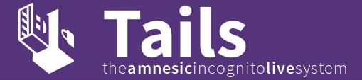
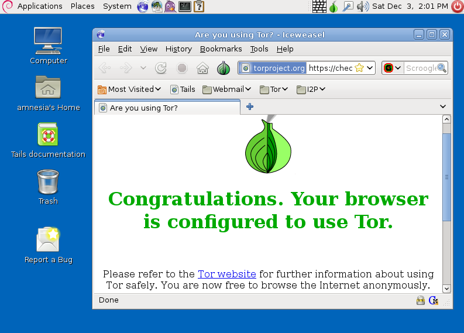

Operating Systems
Tails
Tails is a live system that aims to preserve your privacy and anonymity. It helps you to use the Internet anonymously and circumvent censorship almost anywhere you go and on any computer but leaving no trace unless you ask it to explicitly.
It is a complete operating system designed to be used from a DVD, USB stick, or SD card independently of the computer's original operating system. It is Free Software and based on Debian GNU/Linux.
Tails comes with several built-in applications pre-configured with security in mind: web browser, instant messaging client, email client, office suite, image and sound editor, etc.

Screenshots

Above: Tails OS
Download
Price: Free
Download it via the website